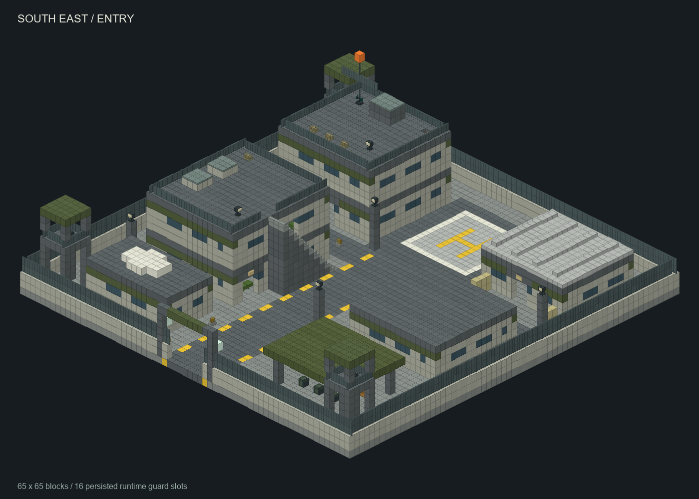
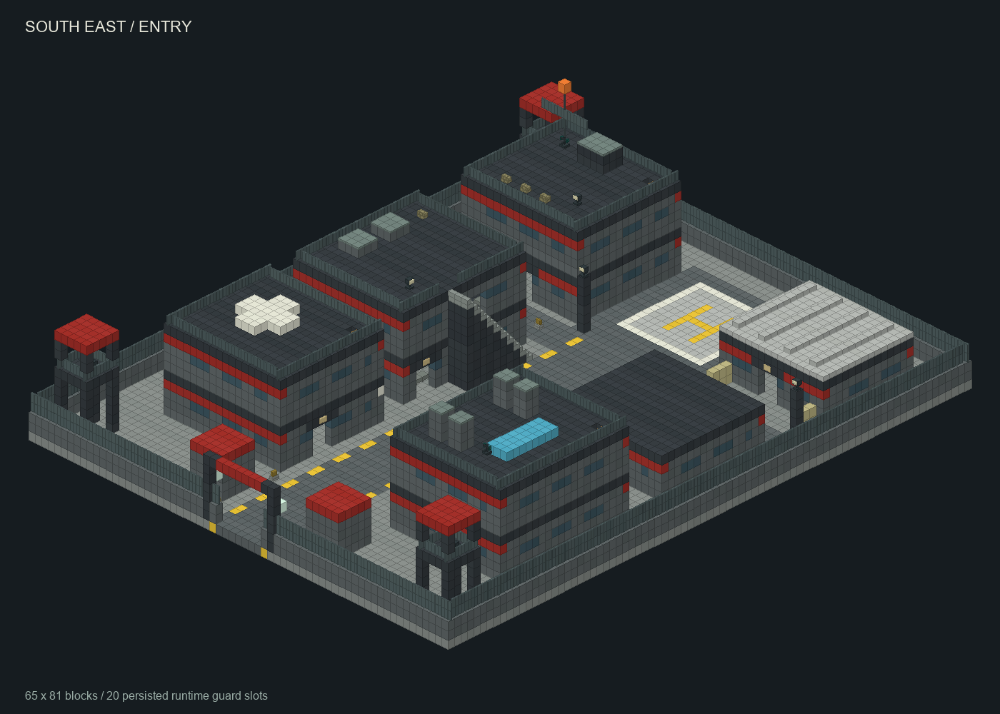

大型军事基地 · 实际资产预览
原创《虐杀原形》军事控制语汇适配；几何来自本次发行资源里的真实 NBT 与自定义方块 JSON，专属贴图从实际 PNG 采样。原版方块使用近似材质；此页面和 PNG 均为离线正交渲染，尚未冒充游戏截图。
军箱、终端、天线为场景装饰；探照灯只发光。金色箱子是原版库存容器，军械和七种弹药由有限战利品生成一次。终端不提供 Blacknet 任务或科研自动化。
军方驻防基地 / 65 × 65
两层指挥楼和营房、独立军械与东北弹药库、医疗补给、三座可攀爬警戒塔、七格南入口；16 个可达驻军位置由运行时持久登记。东南侧为开放补给棚。

点击图片可打开原尺寸 PNG；切换视角不会连接互联网。NBT: data/blacklight/structure/large_military_base.nbt
Meta: data/blacklight/military/large_bases.json
弹药箱: (52,1,12) / (54,1,12) · 全部 NBT entities = []
黑色守望封控科研基地 / 65 × 81
两层指挥楼和营房、独立军械与东北弹药库、医疗补给、三座可攀爬警戒塔、七格南入口；20 个可达驻军位置由运行时持久登记。另有两层科研及医疗隔离翼。

点击图片可打开原尺寸 PNG；切换视角不会连接互联网。NBT: data/blacklight/structure/large_blackwatch_base.nbt
Meta: data/blacklight/military/large_bases.json
弹药箱: (52,1,12) / (54,1,12) · 全部 NBT entities = []
核验边界
生成器已按实际方块做通道、箱子开盖、支撑、室内模块和所有驻军点可达校验。真实放置方向、方块更新、楼梯导航、客户端材质与昼夜照明由主任务服务端/客户端验收。尺寸、补给量和岗位均为本项目设计，不宣称来自原作规范。